4.2 cont
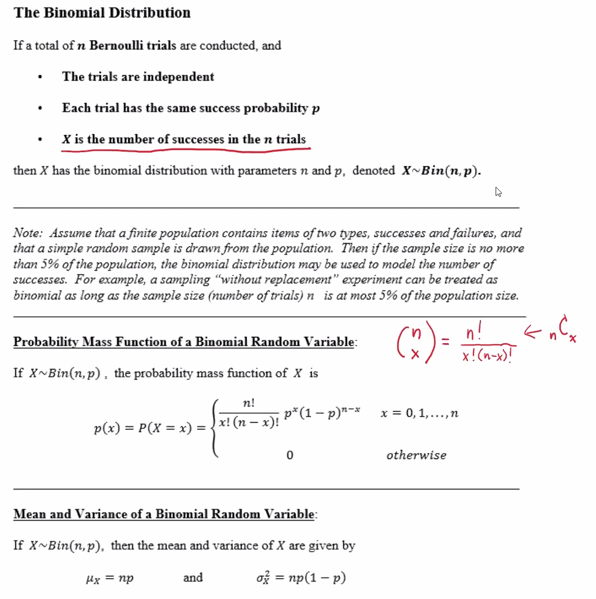
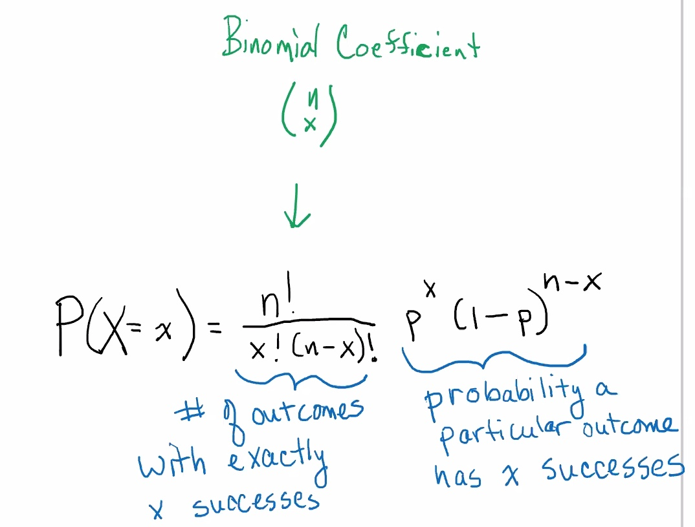
Previous e.g.
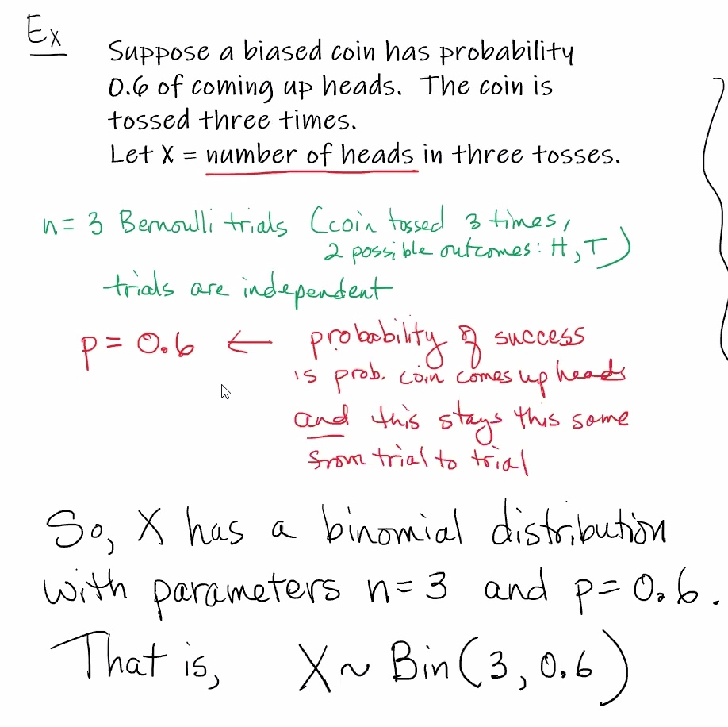
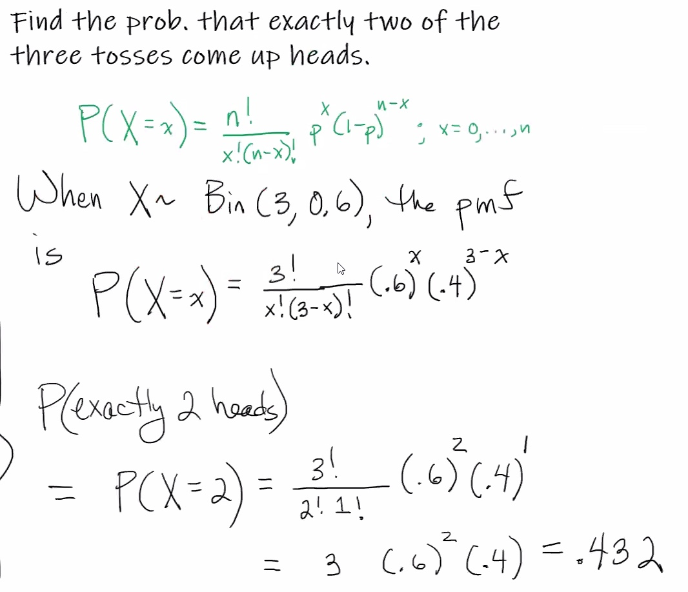
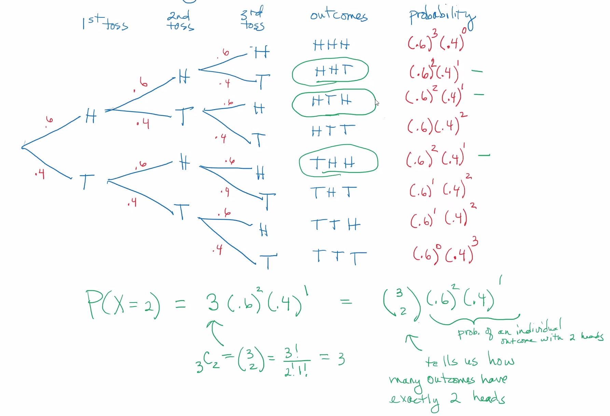
Using our calculators:
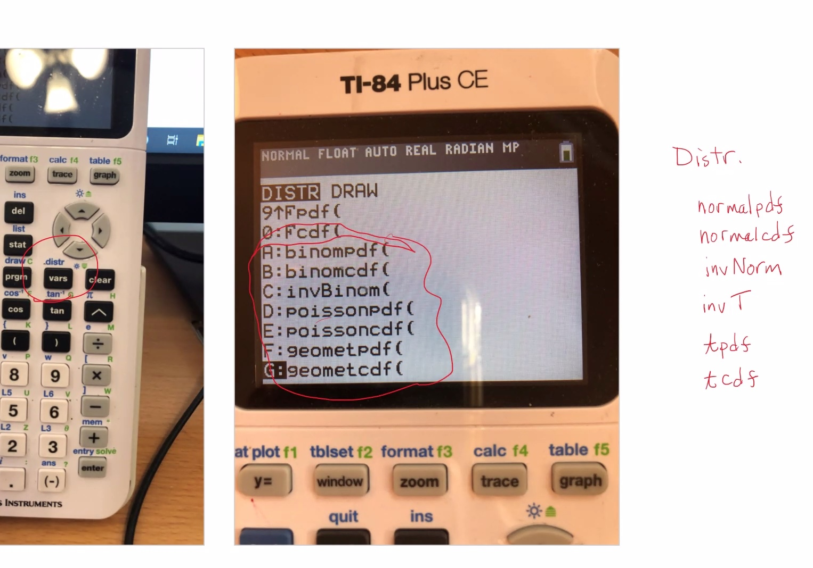
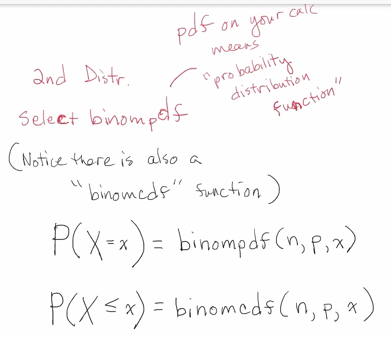
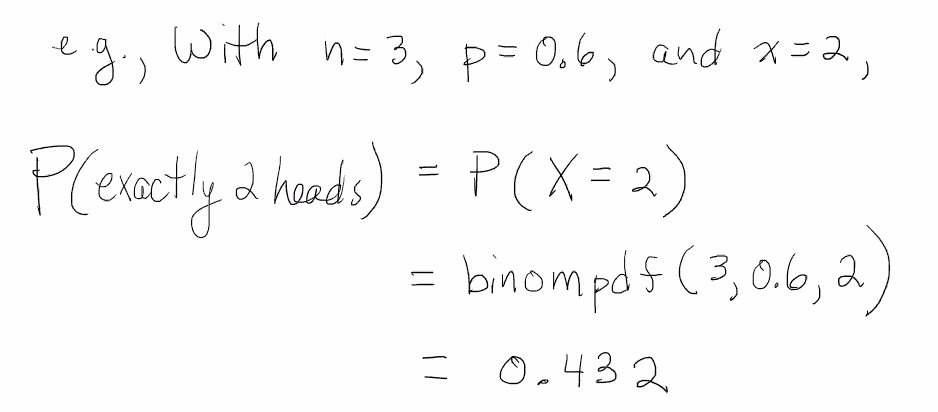
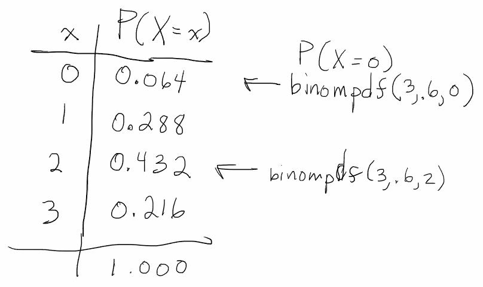
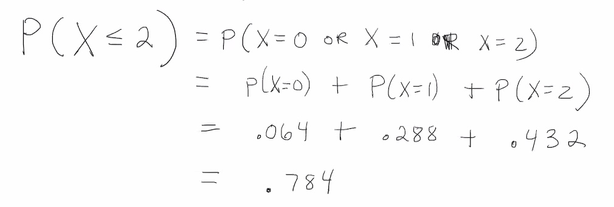
Using the calculator we can use the binomcdf function to get P(X≤2):
Mean and variance of binom distributions
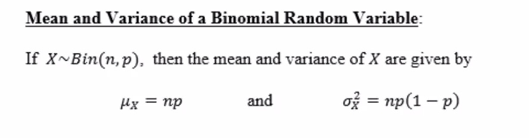
A variation of the Bernoulli random variable.
Mini-proof:
A binomial random variable can be written as a sum of Bernoulli random variables. Assume n independent Bernoulli trials are conducted, each with a success probability p. Consider Y1,⋯,Yn defined as follows:
For i=0,⋯,n:
Yi=1
If the ith trial results in success, otherwise:
Yi=0
Let X = number of success among n trials. Then:
X=Y1+⋯+Ynsum gives the number of Yi that equal 1
So the mean of X is the mean of that sum:
μX=μY1+⋯+μYn=p+⋯+pn of these=np
The variance:
σ2X=σ2Y1+⋯+σ2Yn=p(1−p)+⋯+p(1−p)n of these=np(1−p)
Consider the previous e.g.:
μX=np=3(0.8)=1.8
σ2X=np(1−p)=3(0.6)(0.4)=.72
e.g.
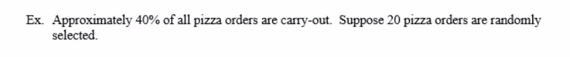
2 outcomes: carry-out order, or not carry-out order.
We'll say success is a carry-out order, so p=0.4.
20 pizza orders are randomly selected, so n=20.
X~Bin(20,0.4)
Where X = number of carry out orders among 20 pizza orders.
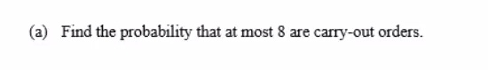
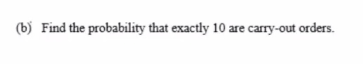
We can use our calculator with P(X=10)
=.117142
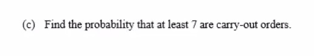
We want to find P(X≥7):
=.749989
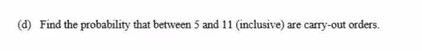
We are looking for P(5≤X≤11)
=.892522
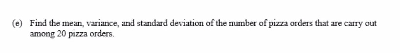